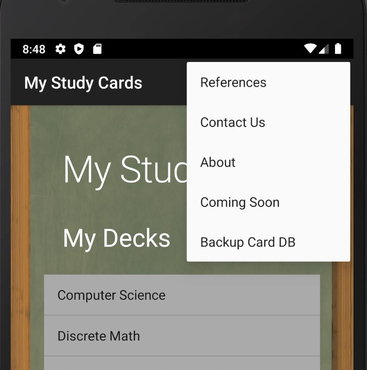

My Study Cards App
The My Study Cards application is a project based upon the requirement to manage a list. In this case the project involved a list of lists, which increased the app's complexity. It utilizes the Model-View-Control architecture to accomplish domain objects, services on those objects, and the presentation layer for user interface views. Services include Create, Retrieve, Update, and Delete operations.
My Study Cards also uses the Singleton Design Pattern to manage a single instance of the app's objects. This is critical for data integrity, as instantiating multiple caches or databases would render previous activities within the app inaccessible. Data persistence was first accomplished by a cache, then through an implementation of a SQLite database. In the final iteration of the project, the app's images and objects could be backed-up in Google Firebase.
Paragraph 3
Paragraph 4
Paragraph 5